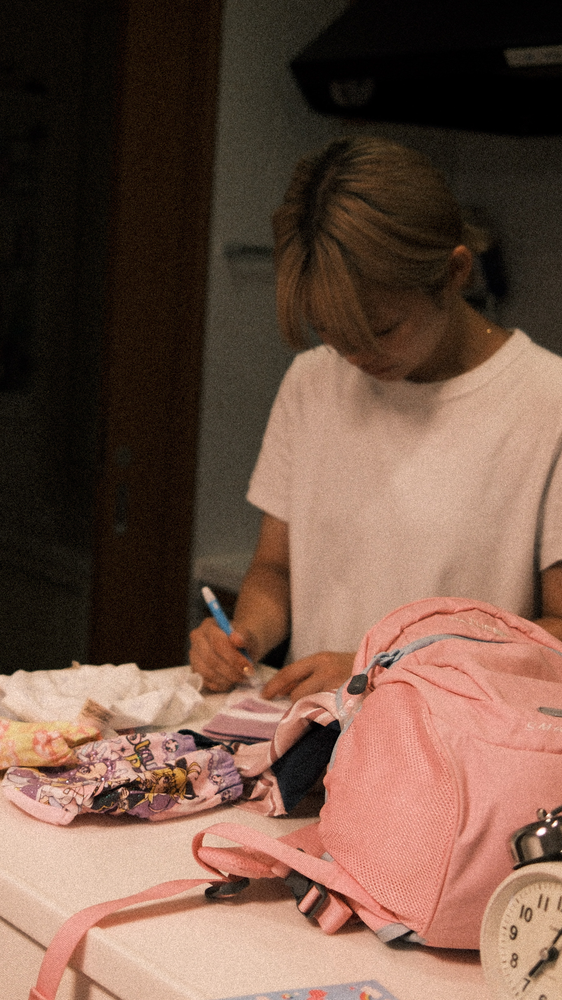

ABOUT YOUZUDE

SELECTOR / BUYER
千有沙
セン アリサ
時代やブランドの名前だけに縛られず、いまの空気に自然になじむ古着を選ぶセレクター。Y2K、スポーツ、デザイナーズ、日常着の境界を自由に行き来しながら、一点ごとの色、シルエット、経年変化に目を向けています。
「誰かが着ていた服を、次の人の現在へつなぐこと」。その考えを軸に、韓国・平沢から、長く手元に残したくなるアイテムをセレクトしています。
- STORE
- 10, Tongmiro 4-gil, Pyeongtaek 1F
- OPEN
- EVERYDAY 13:00–21:00